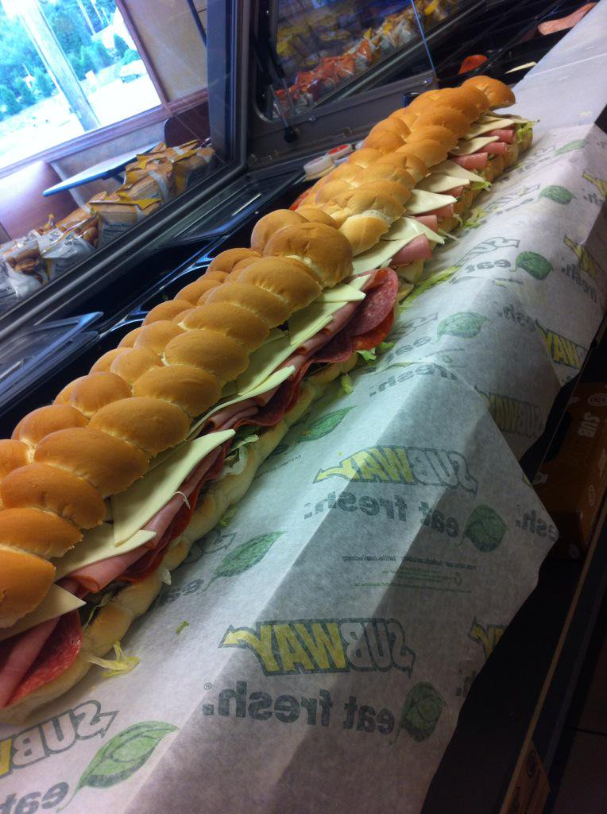
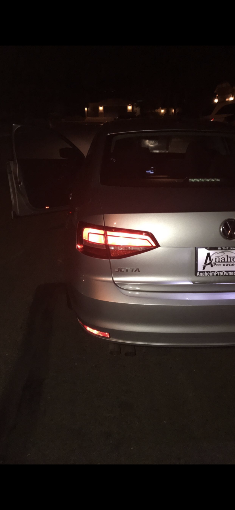
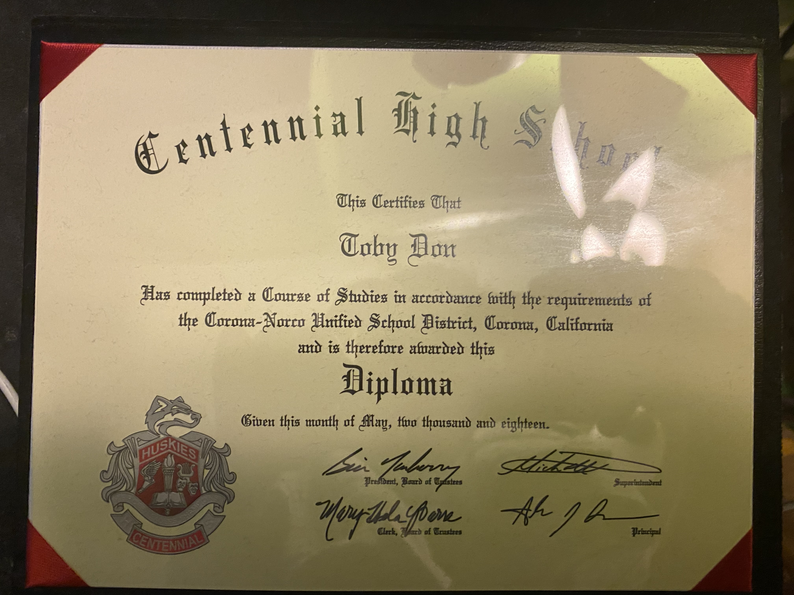
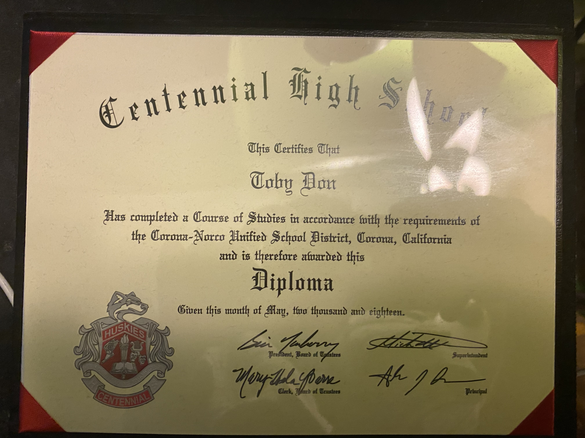

Toby Don
Shift Leader
Server
My name is Toby Don. I am a second year student at the University of California Riverside. I enjoy being very active such as playing sports or going on hikes. I tend to always find a way to do adventurous things if I feel that I've gotten too comfortable. I also very much enjoy food and love to explore all the different type of cuisines that I've yet to experience. I currently work as a shift leader at subway where I supervise any new employees. I tend to work every other day as a closer since I have school every morning. This helps me have time to prepare for work after school so I wouldn't have to rush for work. On weekends, I work as a server at a teppantaki/sushi restaurant where I take orders and wait tables. The job can sometimes be very overwhelming when the nights get busy but the challenge is exciting and the skill set to handle it makes it worth it. The whole team can be very helpful in stressful situations but both job are amazing. For my free time, I like observe and watch a lot of movies/shows since I would one day like to direct a film myself. I find film very interesting because every little detail matters such as the theme or the atmosphere of the scene. Every expression counts and adds on to the film to make things more fitting. Although I am not a film major, I find film as a side hobby where I can fully pay my focus at once all my tasks are finish. For my main hobbies, I tend to enjoy playing volleyball. I used to be on a volleyball team back in High School and it has definitely taught me how important teamwork and concentration are. Volleyball is a sport that cannot be won by one person but only as a team. Without a stable communication, the team can easily fall apart and that's why I love the game so much. It teaches you how to work as a team like never before since it's not like any other sports that I've played such as soccer. Although soccer is a team sport, if an individual has a very talented skill set, they are likely to handle most situations by themselves but volleyball needs the support of the whole team in order to score a point. Another hobby that I enjoy is hiking. I tend to go hiking whenever I can but I tend to do hikes that are somewhat dangerous. For example, I don't like hiking on a trail that is simple and easy but instead I enjoy trails that are very intense with a nice scenery at the final destination. I've gone to majority of the waterfall hikes in the area and they are indeed very mesmerizing. Usually with a waterfall, I am able to jump from it which can be very dangerous but since I enjoy the difficulty, it becomes a great bonding time with my friends.
Experience
Sandwich Artist
• Ensured a safe working environment by following all safety procedures, policies, and regulations.
• Recommended new products to customers, resulting in an increase in add-on sales.
• Cleaned and organized the store, including the checkout desk and displays.
Shift Leader
• Coached team members in techniques necessary to complete job tasks.
• Resolved all customer complaints in a professional manner while prioritizing customer satisfaction.
Server
• Attention to cleanliness and safety
• Patience and customer-oriented approach
• Excellent people skills with a friendly attitude
• Can carry up to 50 pounds steadily
Education
UC Riverside
Centennial High School
Portfolio




